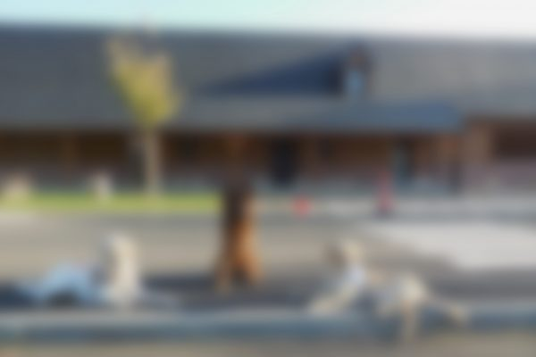

THE FEAR OF EMPTY MAPS

Source
In a period when a huge part of the globe was undiscovered, humanity had to face empty maps and their imaginations to fill those gaps. For a lot of cultures, the thought of the world has been global according to myths and beliefs. This thought helped evacuate all kinds of the unknown. For these civilizations, the unknown does not exist. And from this thought, all kinds of representations of the world have emerged, nourishing cultures and beliefs that fill in the knowledge gap.
This knowledge will be filled by travel. These explorations will initially give “portulans”, maps which will be filled in by contours, in particular thanks to the ports. More trips are made, the more contours become clearer. The unknown spaces, the voids, will be encircled, going more and more inward.
These "interior" spaces will be filled with the imagination of scientists, cartographers, who will make hypotheses about potential creatures, ethnic groups, which exist beyond their knowledge.
Africa is one of the continents to have suffered the most from the intellectual shortcomings of the time because it is the continent closest to Europe. We know the ports well, but we don't know what is inside. So the cartographers fill in the blanks of the map with creatures, mountains, failing to place cities there, making believe that the territory is well known and controlled. Around the 1850s, we began to accept the knowledge and we removed all the imagination of the old cartographers. As a result, the map of Africa will be almost empty.
Scientists no longer allow themselves to be dominated by the fear of the unknown, of empty white cards. On the contrary, the void will become a guide in research and exploration, the goal being to fill the cards with truth and knowledge, and not by imagination.
Aphantasy

A step into the void
How blind people see
